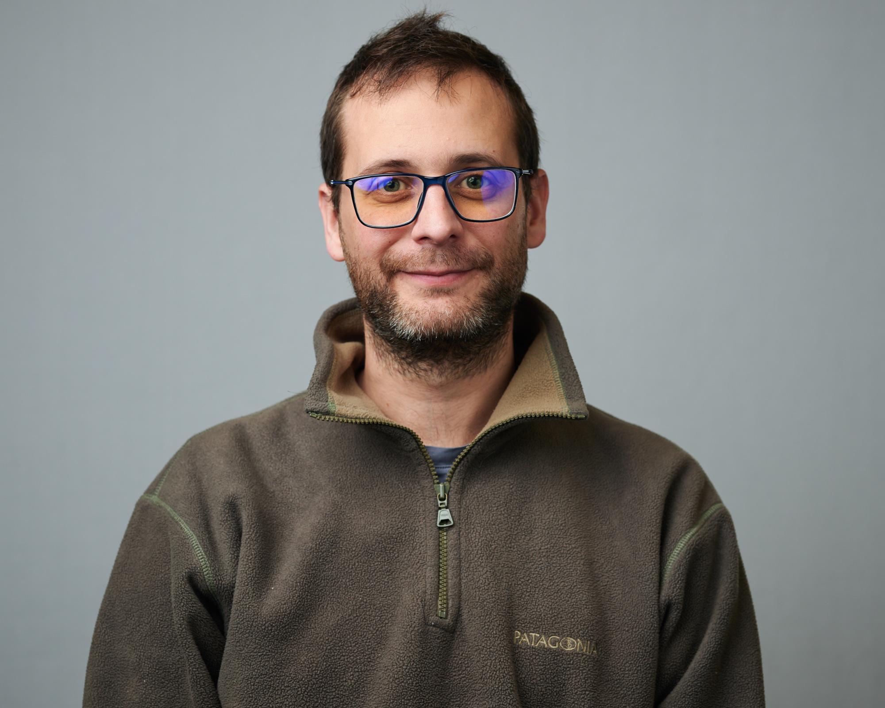

Physics of Cell Motility, Sensing, and Mechanics

Publications, Notes, and Errata
Web interface for finite size corrections in membrane MD
Mathematical Contest in Modeling
Collaborators:
People
 | Brian Camley (with Felix)Assistant Professor, JHU Physics & Astronomy and BiophysicsPostdoc at UCSD 2012-2017 PhD, UCSB Physics 2012 |
 | Emiliano Perez Ipiña [google scholar page]Working on collective chemotaxis with limited positional information, inferring laws of motion from cell motility data, and other projects.Emiliano is a postdoc in the group; he received his PhD from Buenos Aires University. |
 | Ifunanya (Ify) NwogbagaUnderstanding how spontaneous cell turning and cell polarity reversal under a signal are related.Ify is a graduate student in the Program in Molecular Biophysics. His undergraduate degree is in Chemical Engineering from Princeton. |
 | Pedrom ZadehWorking on statistical models and image analysis to infer the rules of branching morphogenesis from data from the Ewald group.Pedrom is a graduate student from JHU Physics and Astronomy. His undergraduate degree is in Physics from University of Virginia. |
Indy BadvaramWorking on models of curvature sensing in fluctuating membranes.Indy is a graduate student from JHU Biophysics through the Jenkins program. |
Kurmanbek KaiyrbekovModeling collective cell motility on topographically patterned substrates with topological defects.Kurmanbek is a graduate student from JHU Physics and Astronomy. |
Wei WangModeling rupture events in collective cell invasion.Wei is a graduate student from JHU Physics and Astronomy. |
Annie KimStudying limits of galvanotaxis.Annie is an undergraduate student in Biophysics and Mathematics. |
Aparajita KashyapModeling concentration sensing in a dynamic environment.Apara is an undergraduate student in Biophysics. |
Chris AnchanStudying the dynamics of organoid branching driven by heterogeneous signaling.Chris is an undergraduate student in Biophysics. |
Group Alumni
Melissa Mai [google scholar page]Studied the transition between swimming and crawling in cell motility with minimal hydrodynamic models.JHU Biophysics and Mathematics undergraduate. [Link to her paper in Soft Matter] Congratulations to Melissa on her Hertz Fellowship and NSF GRFP!. Currently in Harvard's Biophysics PhD program |
 | Austin Hopkins [google scholar page]Models of collective chemotaxis with leaders and followers [paper] and chemotaxis with multiple receptor types [paper].Graduated from JHU Physics & Astronomy Spring 2018 and spent a year as a research assistant in the group. Currently a graduate student at UCSB Physics |
 | Amit Singh, PhD [google scholar page]Working on how polarity proteins can cooperate to sense a cell's shape.PhD in Mechanical Engineering, UCLA, 2018. Currently Assistant Professor, Mechanical Engineering, BITS Pilani |
Travis LeadbetterConstructing energy landscape models of cell polarity and curvature sensing.Travis majored in Physics and Mathematics and is currently a graduate student at UPenn in Applied Math. |
Daniel SwartzTheory of active gels and heavy tails.Daniel majored in Physics and Applied Math and is currently a graduate student at MIT in Physics. See our preprint: arxiv:2105.02348 |
Kyle SullivanModels of collective cell migration on topographic substrates.Kyle majored in Physics and is currently a graduate student at UMass Amherst Physics. |